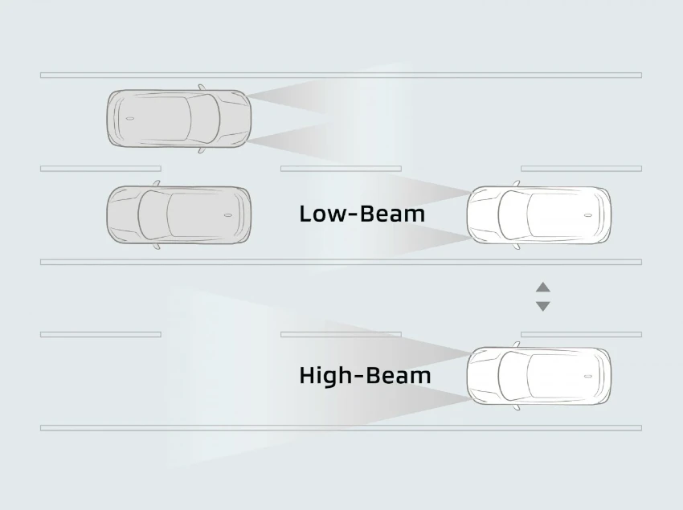
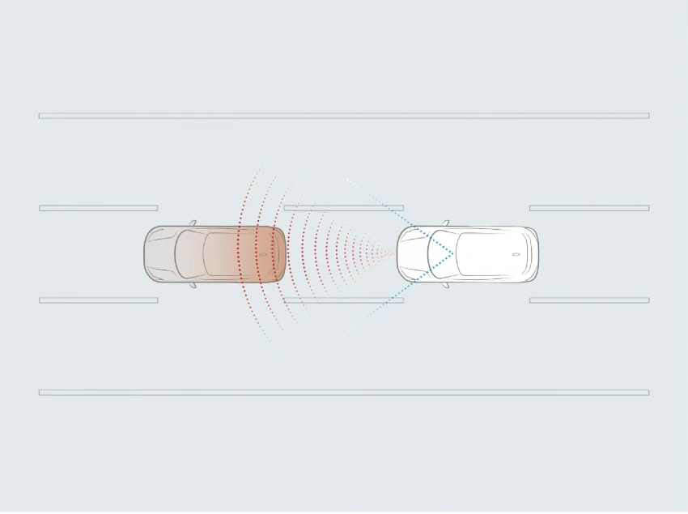

Enhance your adventure with the advanced safety technology
Mitsubishi Xforce adalah SUV kompak terbaru dari Mitsubishi Motors yang dirancang khusus untuk menghadirkan perpaduan antara gaya, kenyamanan, dan performa tangguh di segala kondisi jalan. Mengusung konsep “Best-suited buddy for an exciting life”, Xforce menjadi teman ideal bagi pengendara aktif yang menginginkan kendaraan stylish namun tetap fungsional untuk aktivitas sehari-hari.


| Type Mobil | Harga |
|---|---|
| Ultimate DS CVT (Single Tone) |
|
| Ultimate DS CVT (Two Tone) |
|
| Ultimate CVT |
|
| Exceed CVT |
|
Mitsubishi Xforce dengan Diamond Sense menghadirkan fitur keselamatan canggih untuk perlindungan dan kenyamanan maksimal.
Apapun tantangannya, Mitsubishi Xforce siap memberikan performa terbaik dengan kenyamanan dan kontrol penuh.
Kesan stylish membuat setiap pengendara tampil lebih percaya diri di jalan.
Mitsubishi Xforce Ultimate with Diamond Sense (DS) memiliki 6 airbag, Adaptive Cruise Control, Auto High Beam, Forward Collision Mitigation, Lead Car Departure Notification, radar, dan kamera depan. Varian Exceed dan Ultimate memiliki 4 airbag dan cruise control standar. Semua tipe dilengkapi Blind Spot Warning dan Rear Cross Traffic Alert.
Mitsubishi Xforce Ultimate dengan Diamond Sense terbaru tampil berani dengan desain two-tone—atap hitam yang kontras dengan bodi berwarna, memberikan kesan sporty dan elegan dalam setiap perjalanan.
*Hanya tersedia untuk varian Ultimate with Diamond Sense
Mitsubishi Xforce kini dilengkapi roof rail baru dengan desain dinamis yang memperkuat tampilan sporty dan modern.
*Hanya tersedia untuk varian Ultimate with Diamond Sense
Mitsubishi Xforce tampil lebih agresif dan stylish dengan spoiler baru yang elegan, memberikan kesan dinamis dan percaya diri di setiap perjalanan.
*Hanya tersedia untuk varian Ultimate with Diamond Sense
Memudahkan Anda untuk membuka bagasi dengan Kick Sensor atau dengan Kunci Remot, Anda juga dapat menyesuaikan tinggi bukaan bagasi belakang dengan Height Memory.
Desain futuristik yang menggabungkan kesan canggih dan kokoh khas SUV lewat lekukan bodi yang tegas, sukses menjadikan Anda pusat perhatian.
Desain ikonik Mitsubishi Motors kini tampil lebih modern, semakin menegaskan kesan kokoh dan performa tinggi.
T-shape LED headlight membantu Anda untuk memastikan jarak pandang yang lebih luas di malam hari.
All LED Rear Combination Light, menarik secara visual dan mudah terlihat oleh pengendara lain dan pejalan kaki.
Ban besar dengan ukuran 225/50R18 membuat Anda semakin percaya diri melintasi segala medan perjalanan.
Struktur sarang lebah yang kuat melambangkan kekokohan dan keandalan yang dibutuhkan untuk SUV.
Ciptakan momen seru dalam setiap petualangan dengan kabin lebih lega di kelasnya, konsol tengah dengan pendingin, bagasi yang luas, serta penyetelan suspensi yang lebih baik memberikan rasa nyaman dan stabil dalam berkendara.
Inovasi kemewahan berkelas lewat 12.3″ Smartphone-Link Display Audio dan 8″ Digital Driver Display yang dipadukan dengan desain dashboard bernuansa White Melange dan Mocha.
*Hanya tersedia di varian ULTIMATE
Hidupkan suasana berkendara yang menyenangkan dengan pengalaman audio premium yang memiliki 4 konfigurasi audio (Signature, Lively, Powerful dan Relaxing) menghasilkan kualitas suara jernih yang memenuhi kabin dengan 8 speaker layaknya sebuah konser musik.
*Hanya tersedia di varian ULTIMATE
Menawarkan visual berkualitas tinggi, yang dilengkapi fungsi dan konten yang menarik dengan Wireless Connectivity Android Auto.
Memberikan informasi yang beragam dan mudah dibaca dengan visual berkualitas tinggi
Nikmati kenyamanan dalam kabin dengan pengaturan temperatur Dual Zone yang dilengkapi teknologi nanoe™X mampu menghambat bakteri dan virus sehingga menghadirkan udara kabin yang lebih bersih dan segar.
**nanoe™X hanya tersedia di varian ULTIMATE
Fitur Ambient Lighting membuat suasana berkendara lebih mewah dan tenang.
*Hanya tersedia di varian ULTIMATE
Memberikan opsi sandaran kursi yang lebih banyak untuk kenyaman penumpang di belakang.
Bahkan dalam cuaca panas, kursi mobil tetap nyaman untuk duduk.
Tidak perlu takut daya baterai handphone habis, mengisi daya baterai handphone lebih mudah dengan Wireless Charging.
Miliki akses cepat dan mudah ke barang-barang pribadi seperti ponsel, kunci, atau barang kecil lainnya
Tetap tampil segar dan rapi bahkan saat dalam perjalanan.
Fitur yang dirancang untuk memberikan kenyamanan ekstra dengan mengalirkan udara ke area lutut pengemudi.
Menjaga minuman tetap segar selama perjalanan
Memberikan kemudahan pengendara untuk memantau berbagai informasi kendaraan dengan cepat
XFORCE menawarkan ruang yang lebih dari cukup untuk barang bawaan berukuran besar, seperti stick golf, koper, dan sepeda, dengan menyediakan lantai ruang kargo yang dapat disesuaikan ketinggiannya.
Diamond Sense adalah inovasi keselamatan dari Mitsubishi Motors yang dirancang untuk memberikan kenyamanan dan perlindungan ekstra saat berkendara. Dengan sensor canggih yang mampu merespons situasi sekitar, teknologi ini memastikan pengalaman berkendara yang lebih aman dan penuh percaya diri di setiap perjalanan Anda.
Cruise Control dengan fitur advanced meliputi Adaptive with Low-Speed Follow yang mampu beroperasi dalam kondisi Stop and Go dengan sangat smooth. Selain itu memiliki fitur Curve Deceleration yaitu mampu mengurangi kecepatan pada kondisi jalan berkelok.
Sistem Forward Collision Mitigation (FCM) secara otomatis mengaktifkan rem ketika mendeteksi potensi benturan sehingga mengurangi risiko kecelakaan dan memastikan keselamatan penumpang serta pejalan kaki.
Rear-Cross Traffic Alert mendeteksi kendaraan yang mendekat dari kedua sisi belakang, sehingga memungkinkan keluar parkir dengan aman.
Mendeteksi kendaraan lain di area blind spot, dan memberikan peringatan kepada pengemudi melalui Digital Driver Display.
Secara otomatis menyesuaikan lampu low beam atau high beam dengan mendeteksi penerangan sekitar dan keberadaan kendaraan lain di depan.
Pada saat kendaraan berhenti, fitur ini memberi notifikasi kepada pengemudi melalui Digital Driver Display untuk segera maju mengikuti kendaraan di depan.
Fitur ini dapat mengaktifkan On/Off lampu depan secara otomatis sesuai dengan kondisi penerangan sekitar
Secara otomatis mengaktifkan dan menyesuaikan kecepatan wiper saat hujan, menjaga visibilitas tanpa mengganggu fokus pengemudi.
Membantu pengemudi saat mundur dengan memberikan tampilan jelas di area belakang kendaraan serta mengurangi blind spot terhadap objek lain.
6 Airbags memberikan keselamatan bagi pengemudi dan penumpang selama perjalanan.
*Untuk Varian Ultimate dan Exceed memiliki 4 Airbags.
Mengerem dengan aman meskipun disaat yang tidak terduga.
Berkendara dengan rasa aman dengan Active Stability Control yang membantu Anda menjaga mobil agar tetap stabil.
Dengan bantuan Hill Start Assist memudahkan Anda untuk Stop & Go pada jalanan menanjak atau menurun.
Berkendara lebih seru dan percaya diri dengan fitur Drive Mode yang dapat disesuaikan dengan berbagai kondisi jalan.
*Hanya tersedia di varian ULTIMATE.
Radius putar kecil memudahkan Anda untuk manuver dan berbelok dengan sangat mudah.
Ground Clearance tinggi berkendara dengan rasa aman tanpa khawatir.
Sistem pengereman AYC mengontrol gaya penggerak dan pengereman di sisi kiri dan kanan untuk mengoptimalkan kestabilan kendaraan ketika bermanuver secara cepat atau di jalan licin.
Setelan suspensi didesain secara khusus untuk kontur jalan di wilayah Asia Tenggara.

Efisiensi bahan bakar yang tinggi dan ketenangan melalui perpindahan gigi yang mulus pada bukaan akselerator yang lebih rendah.
Halo! Ada yang bisa kami bantu?
Chat Sekarang